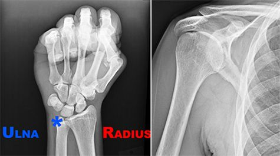
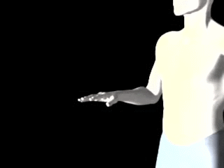
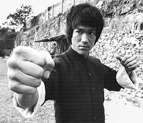
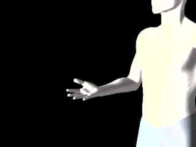
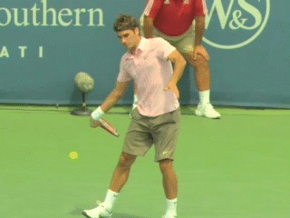
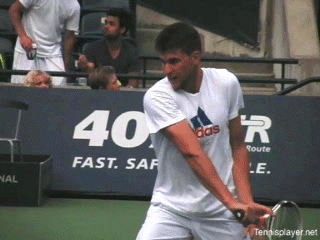
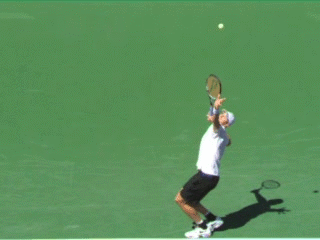

The Most Important Bones in Tennis¶
Paul Hamori, MD

The ulna styloid and the humerus. The movement of these two bones is a key to understanding stroke production.
There are 206 bones in the human skeleton. Which of these are the most important in tennis?
For the purposes of this article I am limiting myself to the upper body. The two bones are the ulna styloid and the humerus.
I won't deny that tennis is a game of moving with some hitting. As such, getting yourself in proper position allows proper stroking of the ball. This is where the pros excel far beyond any amateur. However, assuming you can get yourself in proper position, these two bones can be imagined as alternate or additional keys to execute high quality swings.
The ulna styloid is the thinner bone in your forearm. The humerus is the single bone in the upper arm.
The motions of the arm have been well described by biomechanists in all the strokes. (See the Biomechanics section.) But visualizing the images of the movement of these bones gives players and coaches additional images to use in developing or improving technique.
The Wrist
I have not heard much about it lately, but the tennis training tool The Wrist Assist is a device popularized and advertised by Brad Gilbert that carried the slogan “feel what the pros feel". (Click Here.)

Agassi: wrist laid back before, during, and after contact.
I still have my wrist assist and every once in a blue moon I hook it up to my old Pro staff and hit a few rally balls on my tennis wall in my basement. The gist of this tool is that it prevents forward flexion of the wrist during stroking of the tennis ball.
During his prime, Andre Agassi was renowned for his unbelievable forehand power. At the time everyone thought Agassi was quite wristy, but high-speed video shows there was very little flexion of his wrist.
His wrist remained laid back before, at, and after the hit. The main source of his power turned out to be internal rotation of the arm in the shoulder joint. The arm, hand and racket rotated essentially as a unit.
There may be a slight amount of flexion coming into ball striking but it is minimal. Significant forward flexion only occurs toward the end of the follow-through as part of the deceleration phase of the stroke.
Acceleration
In My Book the Art and Science of Ball Watching (Click Here.) I have a section devoted to the physics of tennis. In that section I talk about Bruce Lee's 1 inch punch.

Bruce Lee used massive acceleration in his one inch and six inch punches.
Bruce Lee could break a board starting from a one-inch distance. He accomplished this with extreme acceleration.
He also had a 6-inch punch. And this punch is more apropos to the kinetics of tennis strokes. In the 6-inch punch Bruce Lee's combination of flexing of the legs, coiling of the torso, flexion of the arm, and external rotation of the shoulder–followed by the unwinding of this process, which led to tremendous hand speed.
The Bones
Many of us have been shown by our teaching pros the proper use of the shoulder and arm in tennis strokes. However, thinking about the bones in action brings the point home even more clearly.
Moving these 2 bones correctly allows you to maximize racquet head speed to gain the most power with the least effort.
A common terminology confusion in coaching regards the term “pronation." In reality, pronation is the independent rotation of the forearm and hand from the elbow joint.
Biomechanical research has shown this movement has no significant role in tennis strokes. Yes, the forearm rotates. But this is because it is attached to the upper arm.

Pronation: Independent counter-clockwise rotation of the hand from the elbow joint.
It's not an independent movement. What we perceive to be pronation is actually caused by internal or external shoulder rotation.
For the purposes of tennis, and acceleration through the kinetic chain, these motions are the most important. Internal rotation on the forehand and the serve. External rotation on the one-handed backhand.
The Chain
The kinetic chain in tennis is the sequence of events that leads to acceleration and racquet head speed. It is a complex process of body movements. The combination of turning the torso, flexing the knees, rotating the upper arm from the shoulder joint, and then unwinding this entire process leads to a synergistic acceleration of the racquet head providing power and spin.
The last part of this chain is the rotation of the arm from the shoulder. So, let's look at the forehand, the one handed backhand and the serve, the 3 shots where the rotation of the arm is most dramatic, and see how this works.
Forehand

Look at how the ulna bone has rotated until it is pointing basically up at the sky in the full wiper motion.
Initially we prepare the torso with a unit turn which places the shoulders sideways to the net or even turned a bit further. Typically, as the forward swing starts, the face of the racket will be pointed somewhat down toward the court—the so-called tap the dog position. Or it may eventually face the court completely—the so-called pat the dog position.
As we approach the ball, we start to rotate the shoulder internally. The wrist remains stable.
There is little or no forward flexion. This is true with eastern or mild semi-western grips. With the more extreme western grips, with the palm mostly or completely under the handle, the wrist lay back is reduced or eliminated, but there is still no forward flex in the swing.
Look at the last frame in the animation. The ulna styloid has rotated with the rest of the arm until the joint with the hand is pointing basically up to the sky in a full windshield wiper finish. This rotation of the ulna can serve as an excellent image to generate the wiper.
One Hand Backhand
We again start with a unit body turn, putting the shoulders sideways to the net. With the backhand, often the feet are sideways to the net in a closed stance. As we execute the unit turn we simultaneously find our grip and rotate the shoulder internally.
This leads to the butt cap of the racquet and the ulnar styloid pointing straight out to the net. As we initiate the stroke the butt cap and ulnar styloid lead the process and we began to externally rotate the shoulder.
Look in the animation and the arm and forearm. The ulnar styloid is pointing to the sky. Again, visualizing this image is a great key to insure full external rotation.

On the backhand the external rotation of the hitting arm from the shoulder means the ulna styloid at the joint with the wrist points directly up at the sky
Serve
There are a multitude of ways to get to the trophy position in the serve and I won't go into those details. From the trophy position you will see that the ulnar styloid is pointing 45° to the sky with the shoulder externally rotated.
As we initiate the stroke the ulnar styloid and the butt cap lead the upward trajectory of the hand. As the hand rises, we then internally rotate the shoulder.

Watch the hand arm and racket rotate until the ulner styloid points directly down at the court.
The racquet head will shoot up with huge acceleration, pass the hand and reach the ball. This internal rotation continues after contact.
Watch the rotation. Again, we can use the position of ulna styloid as a key image. It has rotated until it points directly down at the court. The lack of this full rotation is a common weakness in huge numbers of recreational players.
Conclusion
Although there are many ways to key strokes, I think visualizing the actual bones in action brings the message home in a tangible way. I hope this article provides you a better understanding of the upper extremity mechanics in tennis, and hopefully visual images you can use in your own game.

I began writing the book that is the basis for this article - The Art and Science of Ball Watching - in August of 2019 and finished it in January of 2021. In a sense, though, I have been working on it since I started playing tennis fifty-five years ago at the age of five. In high school I played four years of varsity tennis in addition to sanctioned USTA junior tournaments. I probably reached a 4.5-5.0 level. I considered playing small college tennis, but by then I was burned out on the sport, and knew that my pre-med studies wouldn't allow time for college tennis.
But tennis was in my blood, and I started playing again with a passion after medical school. During this time, I really started to study the technical aspects of the game.
My idea for the book started out with various technical ideas that I had been kicking around by watching great players over several generations. In the end I came to the conclusion that good racket to ball contact depends on good ball watching. I wrote the book to teach myself how to see racket to ball contact and my hope is it can help you do the same.